library(tidyverse)
theme_set(theme_light())
library(mgcv)
library(tidygam)The decline of local anchoring: A quantitative investigation
Packages
Read data
eng_hist <- read_csv("data/eng_hist.csv")New names:
Rows: 21558 Columns: 34
── Column specification
──────────────────────────────────────────────────────── Delimiter: "," chr
(25): TextId, SubType, Title, Author, Genre, Cat, Locs, Locw, ft_clsMain... dbl
(7): ResId, Date, Size, Words, ft_antdist, Include, TextList lgl (2): ...32,
...33
ℹ Use `spec()` to retrieve the full column specification for this data. ℹ
Specify the column types or set `show_col_types = FALSE` to quiet this message.
• `` -> `...32`
• `` -> `...33`
• `` -> `...34`eng_filt <- eng_hist %>%
filter(Include == 1) %>%
mutate(
period = case_when(
EnglishPeriod == "OE" ~ 1,
EnglishPeriod == "ME" ~ 2,
EnglishPeriod == "eModE" ~ 3,
EnglishPeriod == "lModE" ~ 4
),
EnglishPeriod = factor(EnglishPeriod, levels = c("OE", "ME", "eModE", "lModE")),
Pentaset = factor(Pentaset, levels = c("Identity", "Inferred", "Assumed", "Inert", "New")),
TextId = as.factor(TextId),
cent = ifelse(
str_length(Date) == 3,
str_sub(Date, 1, 1),
str_sub(Date, 1, 2)
) %>% as.numeric() + 1,
genre = str_to_lower(Genre) %>%
str_sub(1, 3)
)
eng_count <- eng_filt %>%
group_by(EnglishPeriod, period, TextId, Pentaset, Words) %>%
count()
eng_count_date <- eng_filt %>%
group_by(cent, TextId, Pentaset, Words) %>%
count()
eng_count_genre <- eng_filt %>%
group_by(EnglishPeriod, period, TextId, Pentaset, Words, genre) %>%
count()
preps <- c("after", "at", "about", "among", "before", "between", "binnan", "by", "for", "from", "mid", "of", "on", "through", "till", "to", "upon", "without")
eng_preps <- eng_filt %>%
mutate(
ft_p_text = case_when(
ft_p_text == "ymbe" ~ "about",
ft_p_text == "ymben" ~ "about",
ft_p_text == "vmben" ~ "about",
ft_p_text == "ere" ~ "before",
ft_p_text == "in" ~ "binnan",
ft_p_text == "within" ~ "binnan",
ft_p_text == "with" ~ "mid",
ft_p_text == "until" ~ "till",
ft_p_text == "unto" ~ "to",
TRUE ~ ft_p_text
)
) %>%
filter(
ft_p_text %in% preps
)Data checks
table(is.na(eng_hist$TextId))
FALSE
21558 table(is.na(eng_hist$Pentaset))
FALSE TRUE
21557 1 table(is.na(eng_filt$TextId))
FALSE
18192 table(is.na(eng_filt$Pentaset))
FALSE
18192 eng_filt %>%
count(EnglishPeriod)# A tibble: 4 × 2
EnglishPeriod n
<fct> <int>
1 OE 6185
2 ME 4068
3 eModE 4942
4 lModE 2997eng_filt %>%
count(Pentaset)# A tibble: 5 × 2
Pentaset n
<fct> <int>
1 Identity 5532
2 Inferred 4452
3 Assumed 475
4 Inert 2515
5 New 5218eng_filt %>%
count(EnglishPeriod, Pentaset)# A tibble: 20 × 3
EnglishPeriod Pentaset n
<fct> <fct> <int>
1 OE Identity 2367
2 OE Inferred 1139
3 OE Assumed 157
4 OE Inert 967
5 OE New 1555
6 ME Identity 1419
7 ME Inferred 1015
8 ME Assumed 72
9 ME Inert 351
10 ME New 1211
11 eModE Identity 1208
12 eModE Inferred 1174
13 eModE Assumed 118
14 eModE Inert 421
15 eModE New 2021
16 lModE Identity 538
17 lModE Inferred 1124
18 lModE Assumed 128
19 lModE Inert 776
20 lModE New 431eng_filt %>%
ggplot(aes(EnglishPeriod)) +
geom_bar()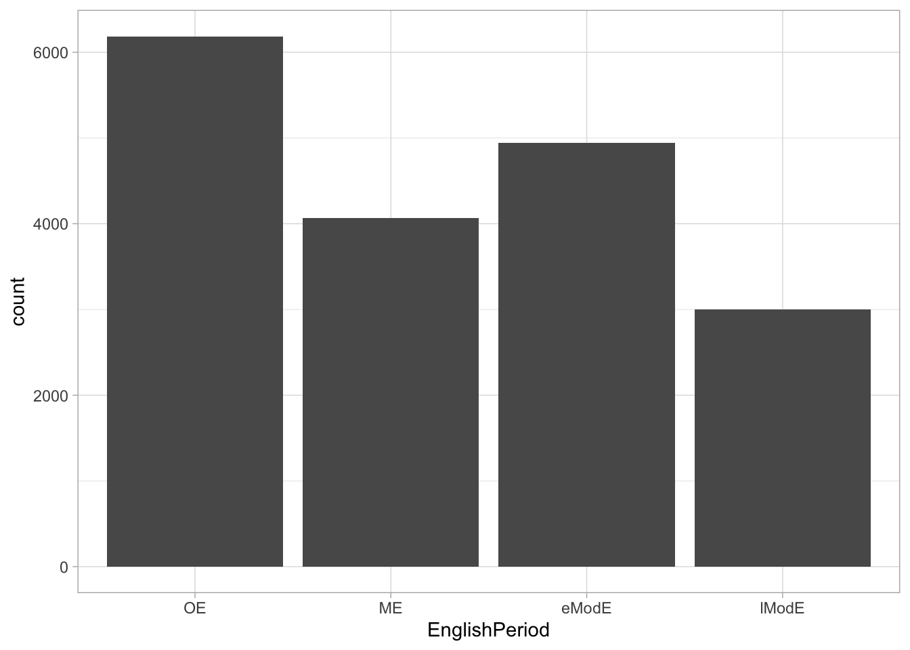
eng_filt %>%
ggplot(aes(Pentaset)) +
geom_bar()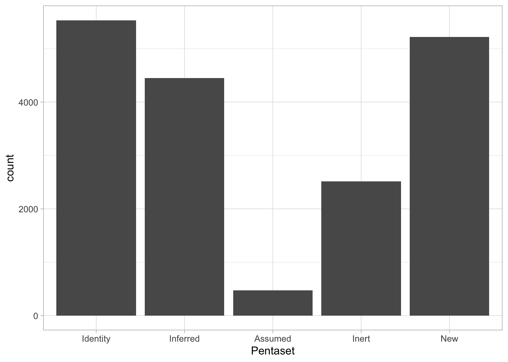
eng_filt %>%
ggplot(aes(EnglishPeriod, fill = Pentaset)) +
geom_bar() +
scale_fill_brewer(palette = "Set1")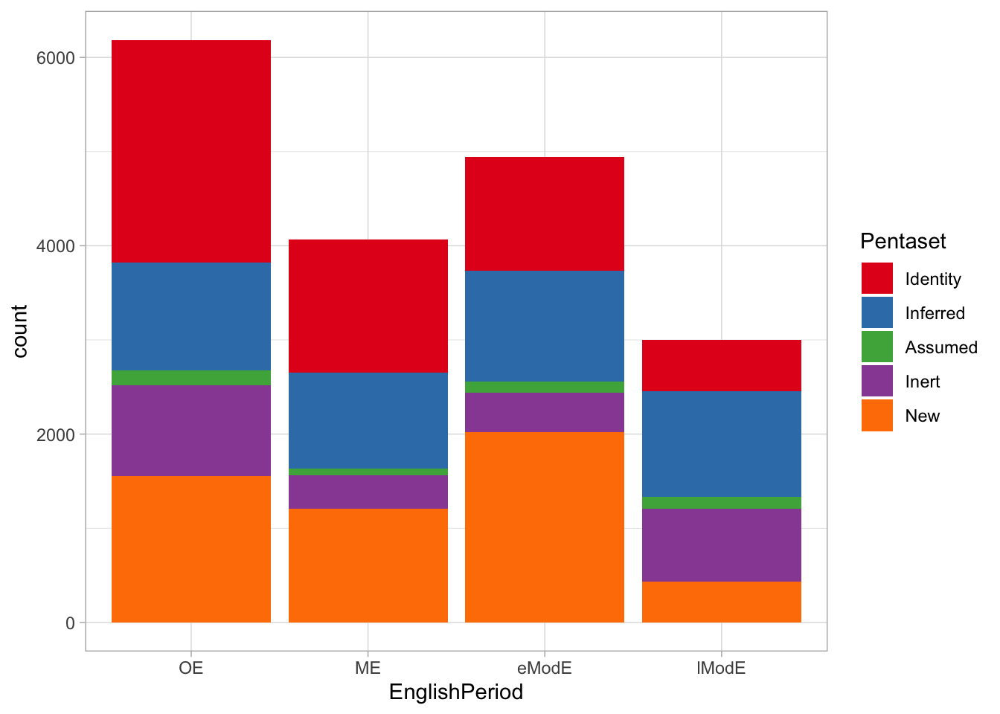
eng_filt %>%
ggplot(aes(EnglishPeriod, fill = Pentaset)) +
geom_bar(position = "fill") +
scale_fill_brewer(palette = "Set1")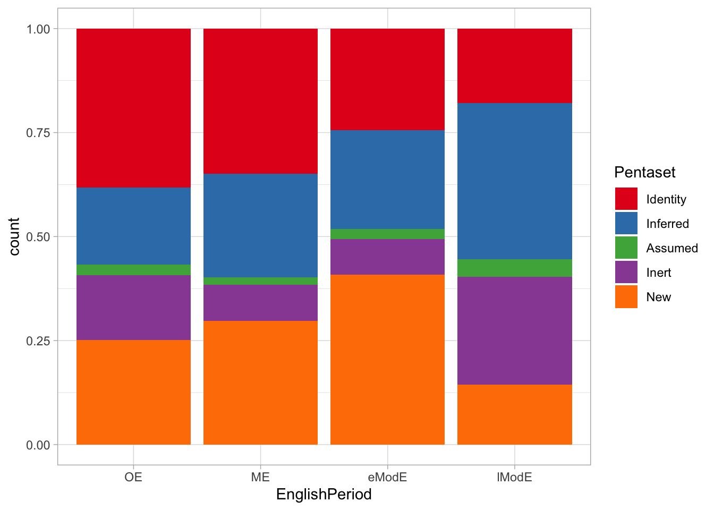
eng_filt %>%
ggplot(aes(EnglishPeriod, fill = Pentaset)) +
geom_bar(position = "dodge") +
scale_fill_brewer(palette = "Set1")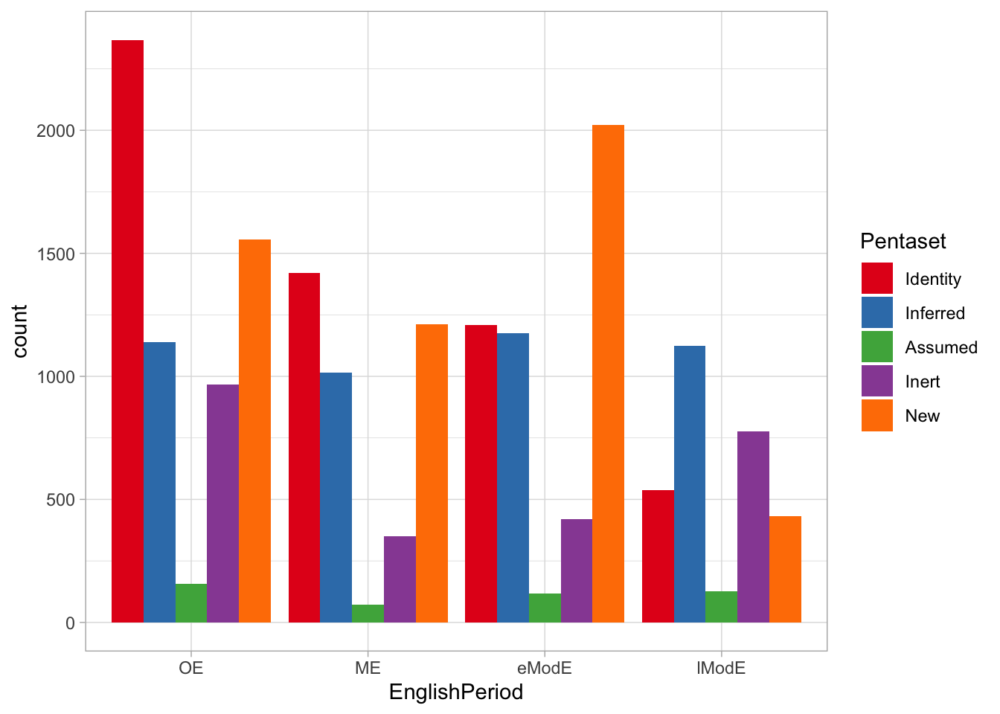
eng_count %>%
ggplot(aes(period, n, colour = Pentaset)) +
geom_jitter(alpha = 0.2) +
facet_wrap(~ Pentaset)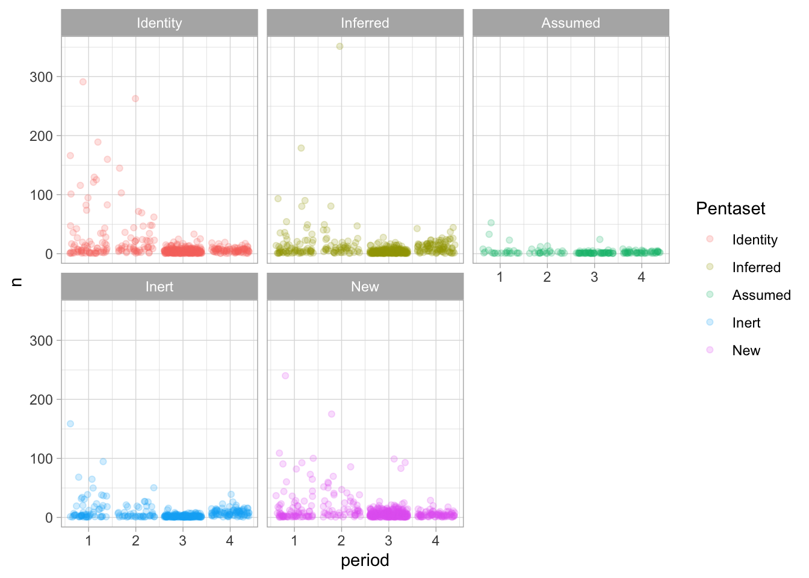
eng_count %>%
ggplot(aes(period, n/Words, colour = Pentaset)) +
geom_jitter(alpha = 0.2) +
facet_wrap(~ Pentaset)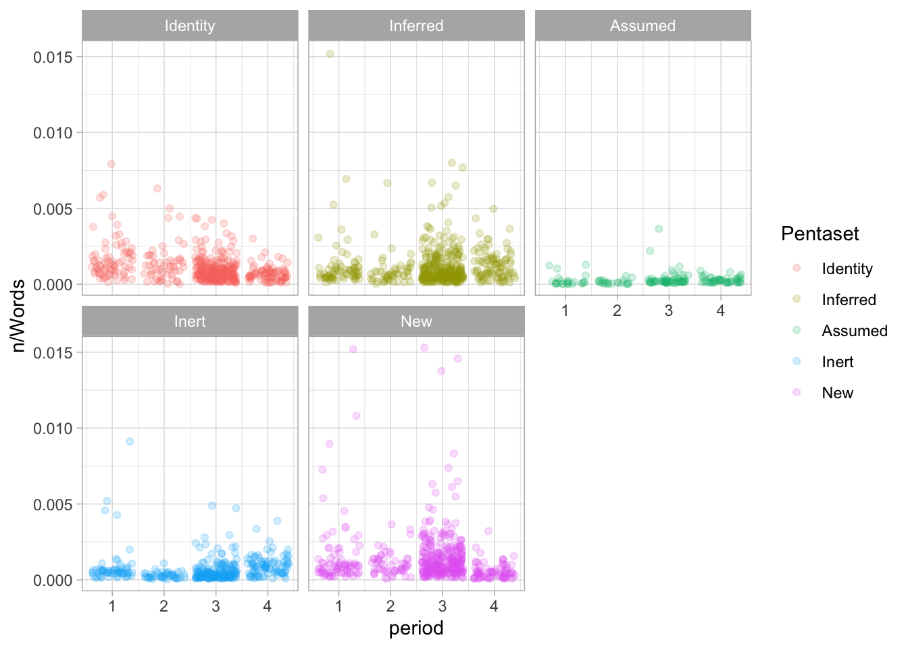
eng_filt %>%
group_by(genre, Pentaset) %>%
summarise(
words = sum(Words),
n = cumsum(n()),
n_rel = n/words,
.groups = "drop"
) %>%
ggplot(aes(Pentaset, n_rel, fill = Pentaset)) +
geom_bar(stat = "identity") +
facet_wrap(genre ~.)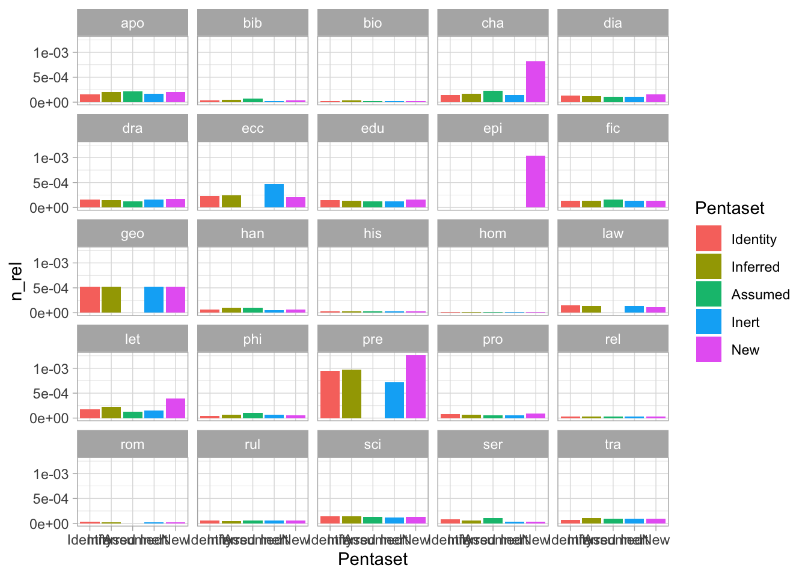
eng_filt %>%
group_by(ft_objNP_type, Pentaset) %>%
summarise(
words = sum(Words),
n = cumsum(n()),
n_rel = n/words,
.groups = "drop"
) %>%
ggplot(aes(Pentaset, n_rel, fill = Pentaset)) +
geom_bar(stat = "identity") +
facet_wrap(ft_objNP_type ~.)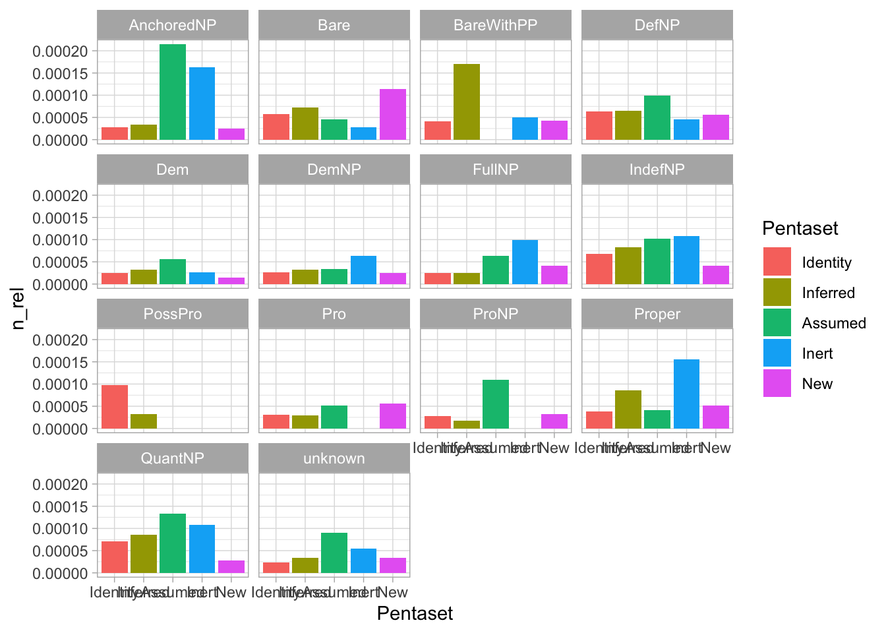
eng_preps %>%
ggplot(aes(EnglishPeriod, fill = EnglishPeriod)) +
geom_bar() +
facet_grid(Pentaset ~ ft_p_text)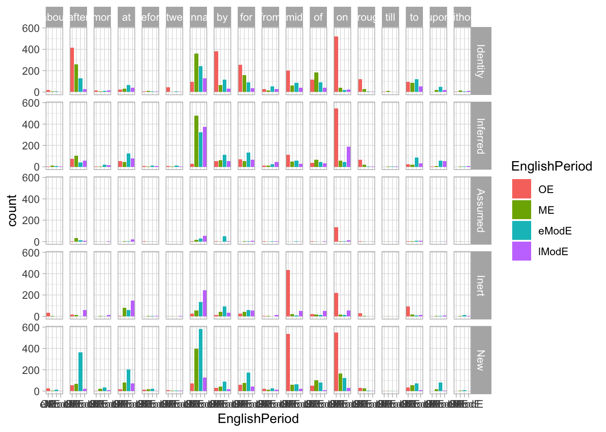
eng_preps %>%
filter(
Pentaset == "Identity",
ft_p_text %in% c("after", "at", "between", "binnan", "by", "for", "from", "mid", "of", "on", "through", "to")
) %>%
mutate(
preposition = case_when(
ft_p_text == "binnan" ~ "in",
ft_p_text == "mid" ~ "with",
TRUE ~ ft_p_text
)
) %>%
ggplot(aes(EnglishPeriod, fill = EnglishPeriod)) +
geom_bar() +
facet_wrap(~ preposition) +
labs(
x = "English period"
) +
theme(
axis.text.x = element_text(angle = 45, vjust = 0.5),
legend.position = "none"
)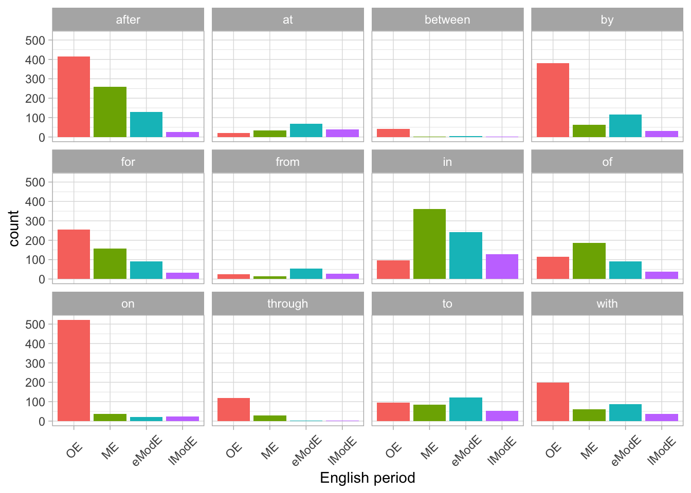
ggsave("img/prep-period.png", width = 7, height = 5)GAMs
Period and Pentaset
if (file.exists("./data/cache/gam_1.rds")) {
gam_1 <- readRDS("./data/cache/gam_1.rds")
} else {
gam_1 <- bam(
n ~
Pentaset +
s(period, by = Pentaset, k = 3) +
s(TextId, bs = "re", m = 1) +
offset(log(Words/100000)),
data = eng_count,
family = poisson,
discrete = TRUE
)
saveRDS(gam_1, "./data/cache/gam_1.rds")
}predict_gam(
gam_1, series = "period",
values = c("Words" = 1e+5),
exclude_terms = "s(TextId)",
length_out = 50, tran_fun = exp
) %>%
plot(comparison = "Pentaset") +
geom_vline(xintercept = c(1:4), linetype = "dotted") +
scale_color_brewer(type = "qual", palette = "Set1") +
scale_fill_brewer(type = "qual", palette = "Set1") +
scale_x_continuous(labels = c("OE", "ME", "eModE", "lModE"), minor_breaks = NULL) +
labs(
y = "Number of PP per 100k words"
)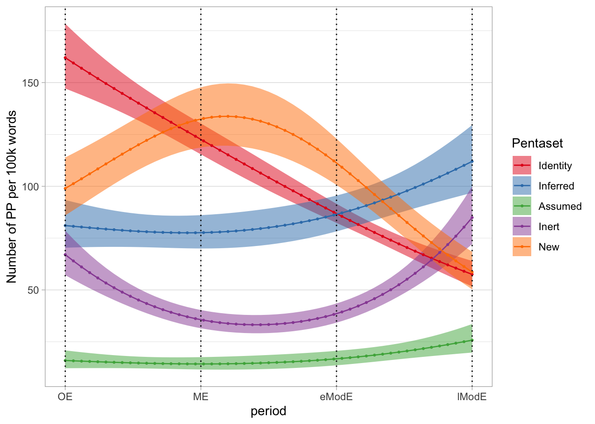
ggsave("img/period-penta.png", width = 7, height = 5)We fitted a generalised additive mixed-effects model to the number of prepositional phrases, using a Poisson distribution. We included the following terms (in parentheses, an explanation of how the term contributes to the model): Pentaset (Identity, Inferred, Assumed, Inert, New), as a parametric term (average number of prepositional phrases according to Pentaset), a smooth over Period (OE, ME, eModE, lModE) by Pentaset (change in number of prepositional phrases over Period by Pentaset), and a by-text factor smooth over period (to account for variations between texts). An offset term was also included to account for the fact that length (in words) differed across texts. The reported estimates are the number of prepositional phrases assuming a text length of 100k words.
The number of Identity PPs decreases from Old English to Late Modern English, while Inferred PPs show a less pronounced increase, especially after Middle English. The number of Inert PPs seems to decrease from Old to Middle English, while it increases again by Late Modern English. The opposite pattern can be observed in the New PPs: after increasing from Old to Middle English, they decrease again by Late Modern English. Assumed PPs are overall less frequent and don’t show clear patterns of change through time, perhaps with the exception of a small increase between Early and Late Modern English.
Century and Pentaset
if (file.exists("./data/cache/gam_2.rds")) {
gam_2 <- readRDS("./data/cache/gam_2.rds")
} else {
gam_2 <- bam(
n ~
Pentaset +
s(cent, by = Pentaset, k = 4) +
s(TextId, bs = "re", m = 1) +
offset(log(Words/100000)),
data = eng_count_date,
family = poisson,
discrete = TRUE
)
saveRDS(gam_2, "./data/cache/gam_2.rds")
}predict_gam(
gam_2, series = "cent",
values = c("Words" = 1e+5),
exclude_terms = "s(TextId)",
length_out = 50, tran_fun = exp
) %>%
plot(comparison = "Pentaset") +
scale_color_brewer(type = "qual", palette = "Set1") +
scale_fill_brewer(type = "qual", palette = "Set1") +
labs(
y = "Number of PP per 100k words"
)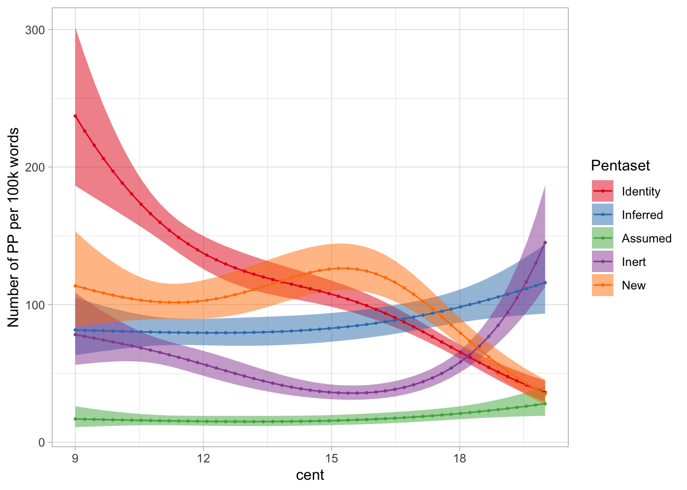
ggsave("img/cent-penta.png", width = 7, height = 5)We fitted a generalised additive mixed-effects model to the number of prepositional phrases, using a Poisson distribution. We included the following terms (in parentheses, an explanation of how the term contributes to the model): Pentaset (Identity, Inferred, Assumed, Inert, New), as a parametric term (average number of prepositional phrases according to Pentaset), a smooth over Century by Pentaset (change in number of prepositional phrases over Period by Pentaset), and a by-text factor smooth over period (to account for variations between texts). An offset term was also included to account for the fact that length (in words) differed across texts. The reported estimates are the number of prepositional phrases assuming a text length of 100k words.
The results are virtually identical to the model fitted with English Period. The number of Identity PPs decreases from Old English to Late Modern English, while Inferred PPs show a less pronounced increase, especially after Middle English. The number of Inert PPs seems to decrease from Old to Middle English, while it increases again by Late Modern English. The opposite pattern can be observed in the New PPs: after increasing from Old to Middle English, they decrease again by Late Modern English. Assumed PPs are overall less frequent and don’t show clear patterns of change through time, perhaps with the exception of a small increase between Early and Late Modern English.